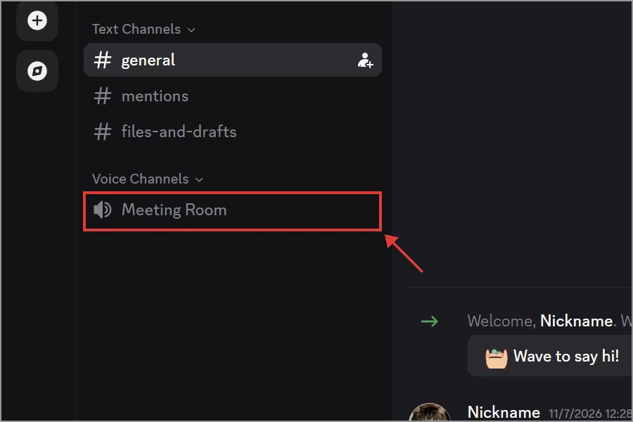
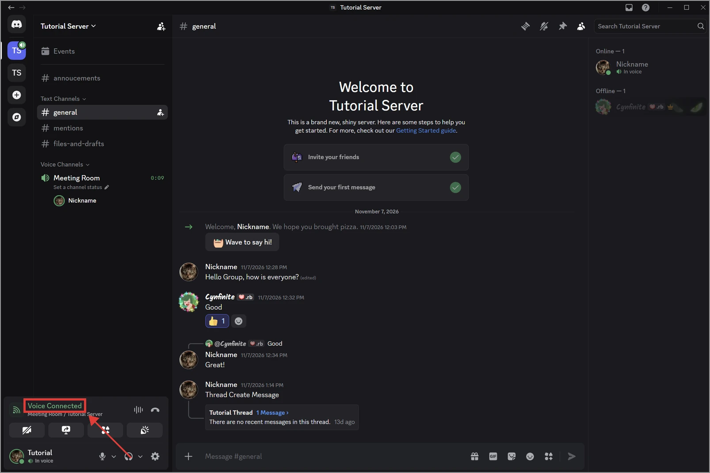
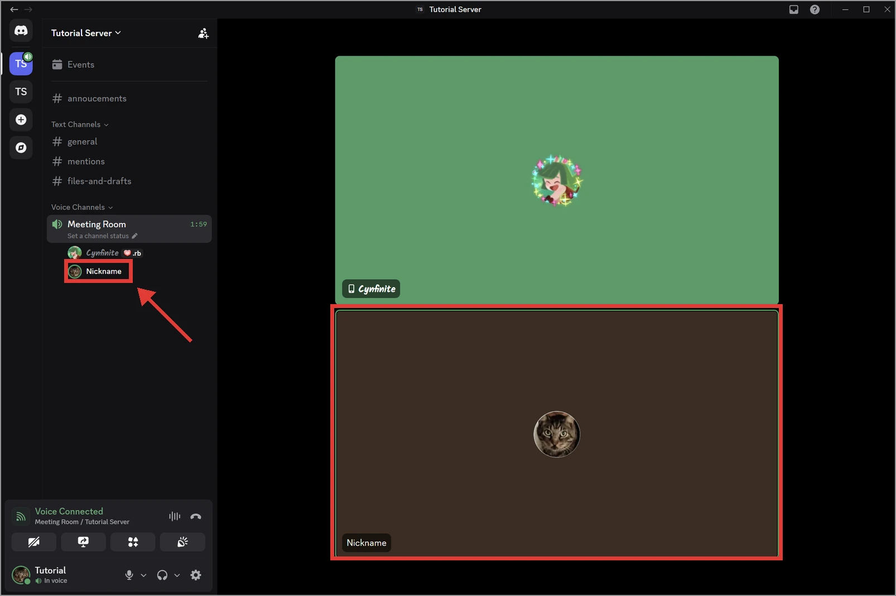
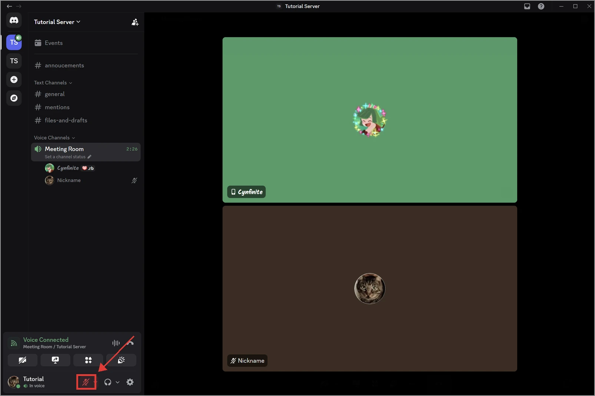
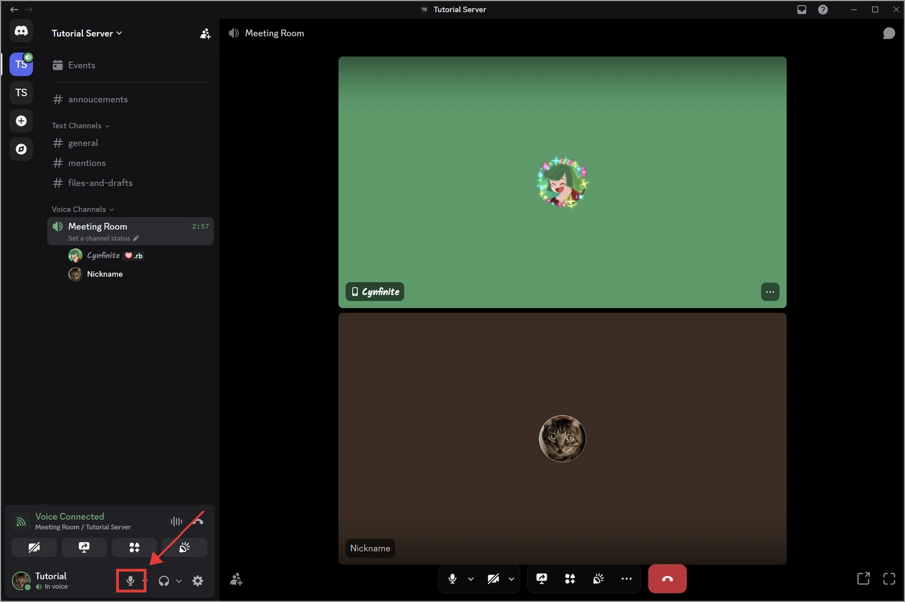
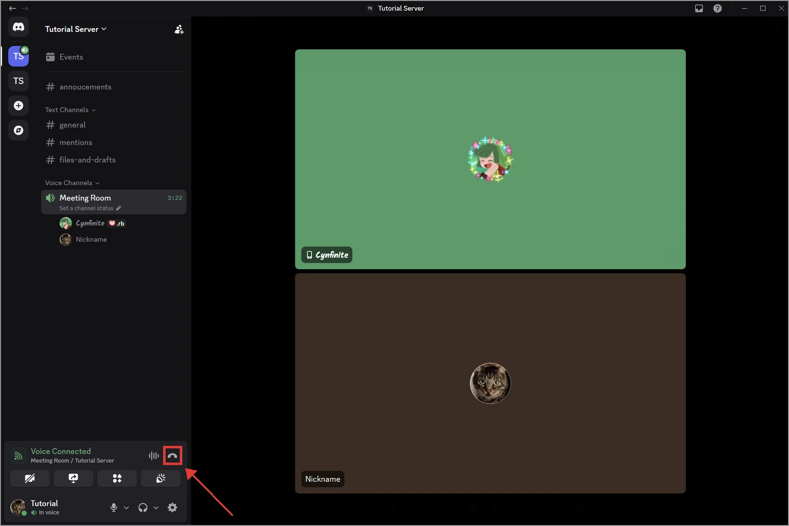
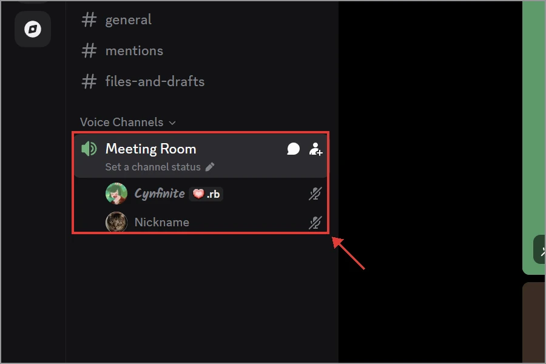
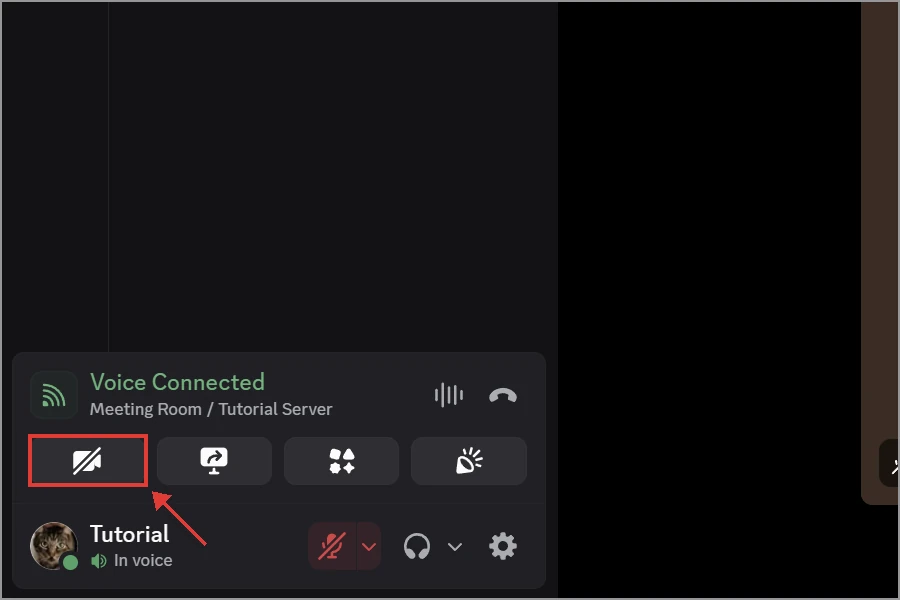
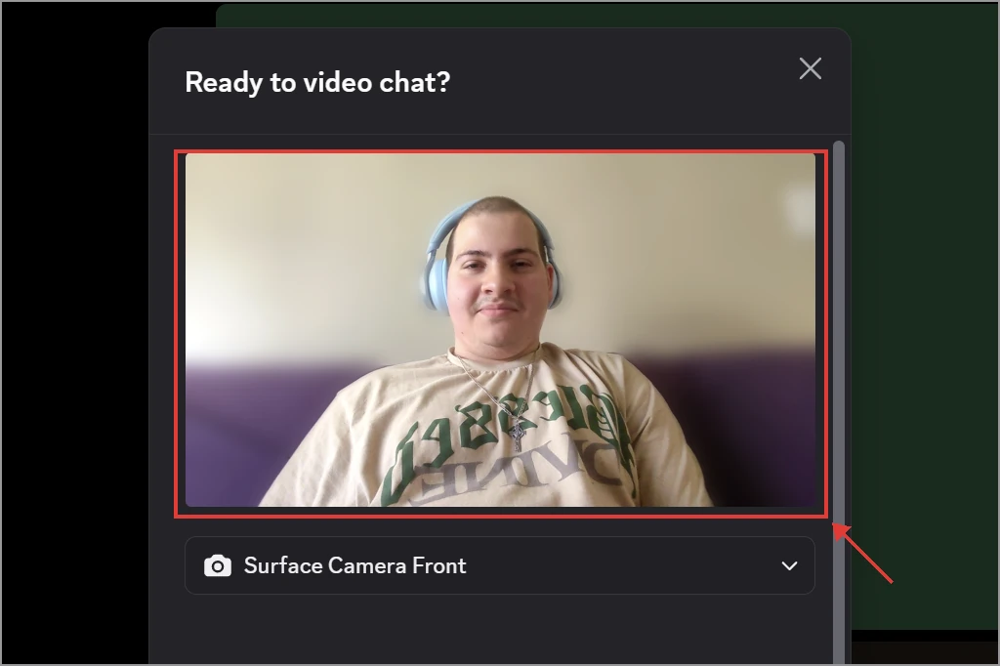
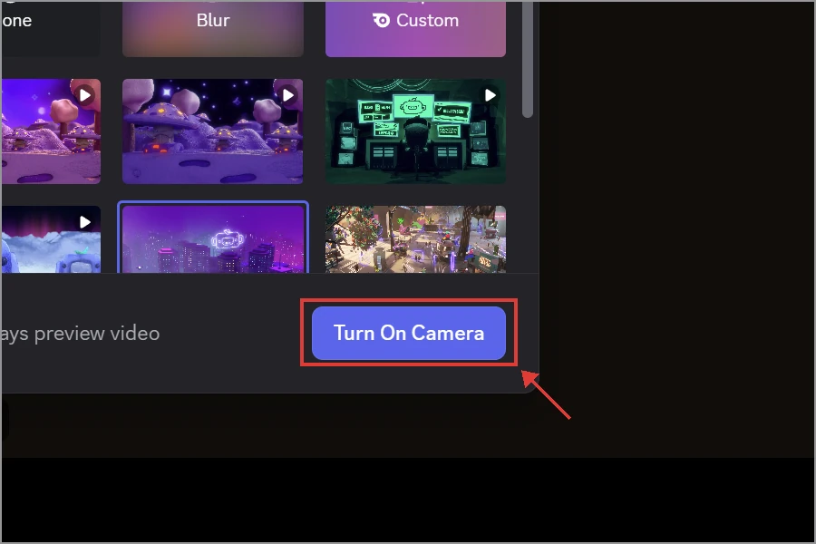

7.1 Joining a Voice Channel and Turning On Video
Group meetings on Discord happen in voice channels. This page shows you how to join a call, control your microphone, and turn on your camera.
Connecting, Muting, and Disconnecting
- Click a voice channel, such as Meeting Room, in the channel list.

Figure 7.1.1: The Meeting Room voice channel in the channel list - Check that Voice Connected appears in green in the voice status panel above your user panel.

Figure 7.1.2: Voice Connected in green in the voice status panel - Speak to your group. A green ring appears around your picture while you are talking.

Figure 7.1.3: A green ring around the picture of the person who is talking - When you are not speaking, click the microphone button in the user panel to mute yourself.

Figure 7.1.4: The microphone button in the user panel after muting - When you want to speak again, click the microphone button to unmute yourself.

Figure 7.1.5: The microphone button in the user panel after unmuting - When the meeting ends, click the Disconnect button (a phone icon) to the right of Voice Connected.

Figure 7.1.6: The Disconnect button (a phone icon) next to Voice Connected
Result: While you are connected, your name appears under the voice channel for everyone in the server. After you disconnect, your name disappears from the channel and no one can hear you.
Turning On Your Camera
- Join a voice channel by following the steps above.

Figure 7.1.7: Joined to the Meeting Room voice channel with members listed under it - Click the Video button (a camera icon) in the voice status panel.

Figure 7.1.8: The Video button (a camera icon) in the voice status panel - If a camera preview window opens, check that your picture and background look the way you want.

Figure 7.1.9: The camera preview in the Ready to video chat window - Click Turn On Camera in the preview window.

Figure 7.1.10: The Turn On Camera button in the preview window
Result: Your video appears in the call view for everyone in the voice channel. When the camera is off, teammates see your profile picture instead.